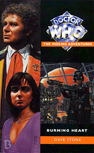

|
Burning Heart
|
BASIC PLOT DOCTOR COMPANIONS MATERIALISATION CIRCUIT PREPARATORY READING CONTINUITY REFERENCES The Author's Note at the beginning mentions the Vermicious Knids, a Roald Dahl reference that is mentioned in Return of the Living Dad. Quite what this means is anybody's guess. Pg 7 Ragho ak Areghi is "a Mentor from Thoros-Beta", location of the action in The Trial of a Time Lord, parts 5-8 (Mindwarp). Pg 8 "Four hundred and seventy counts, illegal traficking of Earth Reptile pituitary-analogue extract." Sounds delightful. 'Earth Reptile' is the PC way of referring to the Silurians (but is also a more accurate title for them). Pg 12 "They were fighting over the worn and roughly repaired remains of a VR headset several centuries old, of the sort that had been used by Strikeout XIV assault pilots during the Earth/Draconian wars." These wars were raging during Frontier in Space as well as forming the backdrop to much of the NA Future History cycle (Love and War through to Lucifer Rising). Pg 14 "The old Earth Empire was in the process of being dismantled from the outside in, abandoning countless systems colonized during its expansion to their fate." The collapse of the old Earth Empire was most notably seen in The Mutants, although other future stories are also informed by this. Pgs 18-19 "Once again - yet again - Peri felt that edgy mix of disappointment and annoyance. Once again, on some deep emotional level, she had expected to turn and see the friendly and engaging, utterly decent and trustworthy man she had once known - only to find that it was, well, him. The Doctor. It always slightly disoriented her, kept her on the wrong foot. The fact that she had now known this version of the Time Lord longer than the original just seemed to make it all the worse." Peri remembers the Fifth Doctor from Planet of Fire etc. Dave Stone couldn't have known that someone would insert several audios, a whole new companion and Peri's yearlong adventure in Warmonger in the gap between Planet of Fire and The Caves of Androzani, so one must assume that Peri and the Sixth Doctor have had numerous adventures together as well. (Grave Matter and Synthespians™, at least, would appear to occur between Vengeance on Varos and this story.) Pg 19 "Peri thought of the Time Lord's erratic behaviour of late." Trying to strangle her in The Twin Dilemma may have given her a hint to his feelings. Also his behaviour at the beginning of Vengeance on Varos left something to be desired. "The real Doctor must still be in there somewhere. That was the only reason why anyone would want to stay with him and put up with him. At least, any other reasons for staying with him were just too horrible to contemplate." The implication here is that Peri is possibly aware that she could be involved in an abusive relationship - that she keeps going back for more punishment. While not entirely a fair description, it may be ratified by the sequence in Shell Shock which shows she was abused by her step-father as a child. There's a (somewhat facetious) reference to the culture of the Aztecs, which may be a reference to The Aztecs and The Left-Handed Hummingbird, and may not. Pg 23 "The core population of humanity is retrenching and consolidating itself. It'll lead to a more stable Federation in the end." This is the Federation that Peladon is trying to enter in The Curse of Peladon. "'Tell you what, why don't we go start with something easy and work our way up? Go back and assassinate Adolf Hitler as a child, maybe?' He snorted. 'The literary executors of Anne Frank would have the shirt off my back.'" This may well be the most tasteless joke in the history of Doctor Who. Pg 24 "The Masonic elements in the police forces of your own time cohered and evolved into a holy, monastic Order - but that developed over the centuries into an almost purely policing organization again. They lost their blanket jurisdiction on Earth after the collapse of the Overcities. They briefly had a stronghold on the Uranian satellite of Oberon, but then the Neo-Reformation pushed them out of the Sol system entirely." A brief history of the Adjudicators, a (fake) representative of which was seen in Colony in Space. The Seventh Doctor's companions Roz and Chris were Adjudicators and the Adjudicators in general pop up quite a lot in the NAs in general. The collapse of the Overcities was seen to begin in Original Sin. A member of the Knights of Oberon, the order that certainly at least some of the Adjudicators became involved in, was seen in Revelation of the Daleks. Pg 25 "The Doctor leant against a steel piling with two crossbars bolted to the ledge of the walkway and watched Peri as she stalked off, noting with approval that the anger he had instilled in her had countered and overridden the severe culture shock that might well have threatened to tear her mind apart." Given the time period and what we know of what it looks like from on-screen Who, it would appear that this severe culture shock would have been engendered by everyone looking as though they were living in the height of 1970s fashion. Pg 27 Reference to Ice Warriors (The Ice Warriors et al), Oolians (Original Sin), Daleks, Fnaroks, a race from Praxis, and some Darians. Pg 28 "The practice had been banned some years before, due to an unfortunate incident involving an overzealous Piglet People sect, a herd of elephants and a number of decommissioned dirty cobalt bombs." Cobalt bombs were used in Timewyrm: Genesys, The Empire of Glass and Iceberg. An elephant appeared in The Ark (and it wasn't stock footage!). Pg 32 "He [The Doctor] would go into paroxysms of grief, seemingly for the hell of it, about a sparrow falling out of a tree while leaving entire civilizations to their deaths." This is consistent with the Doctor's behaviour since his regeneration, although this book endeavours to both explain and justify said behaviour. This is also a paraphrasing of Colin Baker's initial description of how he wanted to make the Doctor more alien: grieving over a butterfly, but stepping right over a dead body. "She remembered a time, a subjective month ago, when some now characteristically erratic bit of Time Lord tinkering had left the TARDIS stalled in the Vortex, seemingly with no way out. She remembered what the Doctor had said: 'You're just going to grow old and die; I'm going to have to live on through regeneration after regeration.' Peri had been forced to come up with a way out of the predicament, more or less out of spite." Vengeance on Varos, and I love the reason that Peri sorted it out. Pg 35 Reference to Cybermen. Pg 36 One of the silliest references to Rassilon ever: "Oh, by Rassilon's grey and hairy beard." It would be churlish of me to point out that Rassilon's beard was seen to be brown in The Five Doctors. "It was that last damned regeneration again. He remembered the feel of the spectrox toxaemia back on Adrozani [sic] Minor, the feel of the things in his blood. He remembered again what it felt like to die, in some fundamental sense, before his proper time." The Caves of Androzani. See Continuity Cock-Ups. Pgs 36-37 "Oh, he had tried not to blame Peri for it - would do the exact same thing again if it came down to it - but the complications of the trauma had remained. He had recognized the symptoms all too well in other over the years. If you survived, you switched it off and dissociated yourself from the world. You became cold and distant. You pushed people away - manoeuvering them into hating you, detesting you so much that they never wanted anything to do with you again." The Doctor suffering from Post-Traumatic Stress Disorder as a result of his recent regeneration is a glorious way to justify the behaviour of the early Sixth Doctor, particularly towards Peri. Similarly, his realisation that this is what he has been doing now ties in expertly with the change from the crueler Doctor of Vengeance on Varos and the more whimsical, cheerful fellow from The Mark of the Rani. It's nicely done and well-handled. (As an aside, the Doctor would be seen to be suffering from Post-Traumatic Stress, in essence, throughout his Ninth incarnation, with violent mood swings and a desperate desire to see everyone get to live.) Pgs 37-38 "It was literally formless: a sense of some approaching absolute oblivion that he would not experience for the course of some time - possibly for months or even years to come - and this very formlessness seemed to have permeated him. He had forgotten on some level that life is of the moment, and must be lived for the moment in hand." A reference to the Seventh Doctor disposing of his predecessor (see Head Games, amongst others) as well as one of the bluntest description of the differences between this Doctor and his successor of the NAs, albeit done with great subtetly. Pg 38 "Vague and hypocritical posturings about the workings and processes of History weren't even in the Sklaki arena." Sklaki swords belonged to the Ice Warriors, according to Sky Pirates. Pg 39 "The next time you start thinking like that, go and kick a stone or something to remind you." Later narrative suggests that this is something said by a Hellenic scholar, but I can't find the reference. "And with that he turned on his heels and set off back towards the concourse where the gathering of humans was taking place, to rescue Peri from the processes that he himself had set in motion. It complicated several plans he had, but he'd just have to sort something out." There is something quite charming (and startlingly obvious) about the idea that the Sixth Doctor tried to be the NA Seventh, but just couldn't bring himself to do it, thus, presumably justifying why the Sixth had to go. See Head Games. Pg 44 "Piglet People dressed in the garish Hawaiian shirts that was their ceremonial garb." This may be a joke about John Nathan-Turner, once producer of Doctor Who, who himself was a fan of these particular garments. Pg 48 "It reminded her of the Governor on Varos" Vengeance on Varos. Pg 61 "She was reminded of the freedom fighters she had met in the maze on Varos." Vengeance on Varos again, unsurprisingly. Pg 79 "People look to God to turn their water into wine, or lead into gold, and forget the real miracle that turns sunlight and chemicals into golden grain and then to -" This is a slight misquote (but with identical meaning) to a sequence in Terry Pratchett's Small Gods. Pg 81 "He's got four of everything he should have two of and two of everything else." The Doctor has two hearts, as we all know (we learn more about this in Earthshock). Note that this, presumably, refers only to internal organs. Pg 85 "'So you see,' said the penguin, 'that it is impossible for you to die. It's impossible for any one of us to really die.'" Potentially one of the most loaded statements in the Sixth Doctor stories, as it may tie in to ideas used in The Room With No Doors about each Doctor, despite their differences, being the same person. The penguin, who eventually metamorphoses into the Doctor, is presumably meant to be a representation of Frobisher (who also appears in Mission: Impractical). Pg 86 "You go down that road and you really are going to find yourself nothing more than some form of ghastly human hybrid without knowing how to cope - and what a travesty and debacle that would be." A somewhat cutting reference to the Telemovie. Pg 87 "You've recently been subjected to a large and particularly concentrated dose of acetylsalicylic acid (which humans, as you very well know, like to refer to as "aspirin") which, as you also know, causes massive, allergic, pulmonary and cerebral embolism in a Time Lord." A third Doctor story shows the Doctor suggesting that an Earth drug would kill him, but it isn't until The Left-Handed Hummingbird that this drug is confirmed to be Aspirin. "The only way out was to shut it down completely. Shut your body down and die." This is, presumably, a deep Time Lord trance, as we saw in Terror of the Zygons and Planet of the Daleks, and as the Sixth Doctor would use again in Killing Ground. Pg 88 "On the surface, it might be surprising that a dying culture produces its biggest and most grandiose follies. The heads of Easter Island, Canary Wharf, the hanging paramarmoset apiaries of Squaxis IV." The heads of Easter Island were important in Eye of Heaven, Canary Wharf was important in Millennial Rites and the Squaxis IV thing here is an unrecorded (and somewhat facetious) reference. "A sense of their impending doom had these people panicking and redoubling the effort when they had long since forgotten the point." This is the definition of 'fanatic' which Roz recalls in Oblivion. "The MimseyTM Incorporation - an Earth conglomerate dating back to the early twentieth century, which had grown out of the animated film studios of one Ralph Waldo Mimsey." Not the most subtle analogue of the Disney corporation. Pg 97 "The third law of thermodynamics meant that in actual fact everything just got older, dirtier and closer to the point where it fell apart completely." The whole of the story of Logopolis focused around the laws of thermodynamics. But see Continuity Cock-Ups. Pg 98 "She supposed that this must be what it felt like to leave an abusive partner who, nonetheless, had been a partner for a matter of years. Or of finally getting away from a hated parent." This, once again, may be a reference to Peri's experiences with Howard, her step-father, as recollected in Shell Shock. Pg 100 "Peri remembered Sontarans from some snapshots the Doctor had once shown her." This was presumably put in to explain the fact that Peri recognized them in The Two Doctors. But see Continuity Cock-Ups. Pg 102 "The mechanism's built from the same stuff and it operates on clockwork." Dave Stone has a fascination with clockwork, beginning with the clockwork universe in Sky Pirates! Pg 106 "It seemed impossible that pockets could hold so much" In fact, the contents of the Doctor's pockets have filled several large black sacks. His pockets may be dimensionally transcendental. (This is always true, but is particularly relevant for the Sixth Doctor, as similar points are made in Business Unusual and Killing Ground as well as other places.) Pg 112 "'My TARDIS. Time and Relative Dimensions in Space.' He smiled fondly. 'Second-best neologism invented by an offspring since the "googol", I always thought.'" The acronym TARDIS was created by Susan (see An Unearthly Child and Lungbarrow, although 'Dimension' was in the singular in both those cases). The word 'Googol' (a number that is 10 to the power of 100) was invented by a nine-year-old child, the nephew of the man who thought up the concept of the number. Nowadays, it's a search engine, albeit mis-spelled. Pg 114 The appearance of various races including Ice Warriors (The Ice Warriors, et al) Gastopods (The Twin Dilemma), Chelonians (The Highest Science, Zamper, The Well-Mannered War), and Tzun (First Frontier, Bullet Time), amongst others rather better known and some who only appear here (see Alien Races). Cybermen offshoots also appear in The Crystal Bucephalus. Individualised Sontarans appear in Shakedown and Mean Streets. Pg 121 "'Don' worry about it,' a shaggy Ursine from Straglon Beta said" Ursines appeared in Shakedown and Mean Streets. "'Same here,' said a Medusiod from Minox VII" Mentioned in Frontier in Space. Pg 122 I was wrong about the silliest reference to Rassilon above. That wasn't it; this is: "Hoping like Rassilon's trousers." Pg 124 "'I know what it is,' said the Doctor gloomily. He remembered the implement from its use in the Russia of the tsars." It's probable that the Doctor saw this remarkably nasty device (a scourging whip) during his visit to Tsarist Russia in The Wages of Sin. Mention of Daleks. Pg 127 "'Fill this specimen jar,' snapped the med-tech. 'What, from here?' asked the Doctor" is a joke blatantly ripped, word for word, from the Bond film Never Say Never Again. Pg 132 "Peri looked down at herself and tried to think Happy Clown thoughts. It wasn't the heavy, padded flak jacket, it was more what was under it. She felt like she should be creaking, even when she was standing still." Peri has become a mercenary for the White Fire, but isn't as uncomfortable as you might imagine, presumably given her experience as a mercenary for a year during the course of Warmonger. Her discomfort here appears to stem from the get-up she's wearing rather than what she's about to do. See also Continuity Cock-Ups. Pg 154 "She had made some verbal slip about the difference between a galaxy and a Universe, and the Doctor was loudly lambasting her for it." This is actually a common error made by writers in the programme who keep getting the two things muddled up (not to mention what, exactly, a constellation is). "In the middle of his tirade, he has simply stopped, and looked at her, and said, 'I really don't regret it, you know. Losing my other life for you. Never think that.'" The beginning of an absolutely glorious few paragraphs of the book, which refers to the events at the end of The Caves of Androzani. Pgs 154-155 "'When a light goes out it leaves us all just a little closer to the dark. And the simple fact is a universe with your brightness in it is infinitely preferable to a universe without.' Now, in that instant of remembrance, Peri recognized something that she had always seen [in the Sixth Doctor], but had never noticed because it was innate, and noticed it now only because she had come to close to losing it. It was the simple, human ability to be honourable and kind." This is the conclusion of the storyline that takes the Doctor and Peri's lousy relationship and tries to heal it just before The Mark of the Rani which sees them getting on rather better. And it does it brilliantly. Pg 168 "Every lead turns into an Oroboros routine." This is an alternate (and less common, but still accurate) spelling of 'Ouroboros', the famed mythological snake that eats its own tail. It's also the title of one of the better episodes of Red Dwarf (with the latter spelling). "The glass was stained, depicting in reverent detail the story of the Adjudicators, their time of power, their time of persecution and their Exodus. The penultimate image, working clockwise, showed stylized rocket ships against the background of a planet that seemed to be on fire." The story of the Adjudicators is fleshed out in many NAs and MAs, but the escape from the burning of the Overcities on Earth was seen (or implied) in Original Sin. Pg 173 Peri, on the subject of friendship with aliens: "'I've got a lot of -' She stopped herself and tried to run through the various alien races she had encountered with the Doctor, trying to find one whose members she hadn't been a contributory factor in killing in large numbers. 'I've got one,' she finished lamely. 'But he really is my best friend. I think he's the best friend I've ever had.'" She has killed most of the aliens she's met, but Warmonger also suggests that she's worked with a good number. To be fair, it's been more in the killing vein of late, and certainly so since the Sixth Doctor turned up. Pgs 173-174 "This was, in fact, the head of Ralph Mimsey himself. After his death it had been cryogenically frozen, as so many twentieth-century heads and bodies had in that time, waiting for the advances in medical technology what would cure what had killed them - in this case cancer of the lower bowel - and revive them." It was a long-time popular rumour that the head of Walt Disney had been frozen, but this is untrue (indeed he was cremated). Disney himself died of lung cancer. Pg 174 Mention of the Techno-Magi of 2476. This may be a reference to the techno-mages of Babylon 5. Pg 175 "Avron Jelks laid the first draft of My Struggle Against Tyranny on the console, to make the needed corrections. The book detailed - or would detail, once the work was finished and a radically new World Order made it mandatory for everyone to buy a copy - the struggle of Avron Jelks against the corrupt and oppressive system that had ground him and others down all their lives." And suddenly, Avron Jelks, the personable rebel leader, is Adolf Hitler writing Mein Kampf (which translates as 'My Struggle'). Many NAs and MAs wrote about fascism and Nazism; curiously, this slightly warped Dave Stone approach, where it's all done with symbols and symbolism, is one of the very best. "Especial mention was made of powerful, high-placed nonhuman factions, who had combined and conspired in secret, for the express purpose of keeping people out of art colleges, despite their work being patently up to standard." Hitler himself was rejected twice by the Academy of Arts in Vienna in 1905 and 1906. "The fact that the Braxiatel Institute of Fine Arts (Applied) had rejected him." Irving Braxiatel first appeared in Theatre of War (after a throw-away line in City of Death) and went on to be a mainstay of the Benny adventures. The Braxiatel Institute is presumably a development of the Braxiatel Collection, given that this is set nearly six centuries after Benny's time there. It's not made clear whether Braxiatel himself is still alive. Pg 178 "But what with the after-effects of the Empire pulling back." The Mutants, amongst others, again. Pg 179 On Avron Jelks: "He has this big thing about cleanliness, and it comes across in glowing little descriptions of people living in filth." Hitler had a similar psychosis - in fact there's so much in common between Hitler and Jelks, it's amazing that Peri doesn't make the connection. Pg 180 Mention of 'Arcturian behemoths', presumably a pet of the Arcturians. An example of normal (non-behemoth) Arcturians was seen in The Curse of Peladon. Pg 184 "I seem to remember a chap who said that it was not a good idea to worship graven images." The Doctor has just name-dropped God. Impressive. (He's possibly just quoting the Bible/Torah.) Pg 199 "He hauled her out of the flier with the kind of unceremonious, cheerful unconcern one shows towards people of whom one can honestly say one doesn't care if they live or die. 'I really wish you wouldn't keep gallivanting around like that, Peri,' he said. 'I missed you. I really did. I'm glad you're not dead.'" So very Sixth Doctor, and quite glorious. Pg 203 "The Doctor had figured crucially in the legends of his family-clan. Personally, Kane didn't believe a word of it, then or now. The stories had told of a little guy who was in some undefined way infinitely larger on the inside than out, who had taken on the monsters and shown people how to beat them." The NAs, in a rather poetic nutshell. "It was like meeting someone who claimed calmly, in all seriousness, to be God. It was quite disquieting and in some vague emotional sense you never quite knew..." The Doctor has been accused of being God beforehand, most notably in Sky Pirates!: "And she looked into his alien eyes, and she knew who he was. What he was. 'Oh my . . .' she said. 'You're-' 'No.' He offered her a sad little smile. 'No I'm not. I'm just the only alternative you've got at this point.'" (Pg 269 of that book) Pg 206 After the Doctor has bellowed 'No' mid-way through the fighting: "Then Peri realised that the cry had come from the Doctor, who was simply striding out into the melee. His face clouded. He seemed, in his own way, unstoppable as the wrath of God. Now shocked back into some real sense of herself, common sense told her that anyone doing this should have been cut down instantly, without mercy or quarter by every side at once - but common sense, here and now, suddenly seemed to have taken a short break." This is very similar to a sequence in Battlefield, although rather better. Pgs 208-209 "The Doctor turned to where Kane was kneeling, clutching to him the body of a woman, gazing into nothing. For the first time the Time Lord's face held something other than furious scorn. It was a kind of deep and utter sadness, big enough to take in worlds. 'You let others fight your battles for you,' he said softly. For the barest instant it was as if he was talking to himself. 'You let them break yourselves for you. You take what you need from them and just go blithely on, never once asking yourself what it cost.'" This could be a description of Kane, or of the NA Doctor, or possibly of the Sixth Doctor himself at this point, and it's deliberately kept unclear as to whom he is referring. Pgs 209-210 "'And so we come at last to the "Glorious Leaders".' The Time Lord somehow managed to spit these words out, regardless of the fact that neither of them contained plosives." This is very accurate writing for Colin Baker. It's also a misquote of a section in a Terry Pratchett novel which involves a character hissing a sentence with no sibilants in it. Pg 211 "'By all means,' said the Doctor. He smiled at Jelks, and there was something faintly evil in his smile. 'Come and have a go if you think you're hard enough, I believe the saying goes.'" The Doctor repeats this phrase in the audio The Shadow of the Scourge, at that point, rather marvellously, attributing it to William Shakespeare. Pg 221 Brief reference to Daleks. Pg 223 Reference to the Doctor's recent regeneration and to a brief visit to Earth in the 1990s, which could have happened at any time really. Pg 228 "They were the eyes of someone in hell, and neither was he out of it" is a reworking of a line from Christopher Marlowe's Doctor Faustus, which the Doctor probably helped him write. Versions of this phrase also appear in Timewyrm: Revelation. Pg 237 "In her time she had seen dead things given a parody of life by some monstrous force or other." Arguably Kamelion in Planet of Fire and, more generally, cybermen in Attack of the Cybermen. Nothing quite so specific as some examples that other companions have seen, however. Pg 242 Kane: "I don't know why, but I expected him to know me. Ah well, it's not as if I ever actually met him." Because the Doctor will eventually meet Kane's distant ancestor, Jason, in Death and Diplomacy. But he hasn't done that yet. "'Y'know it's funny,' Peri said. 'All the stuff we've been through and I don't even know your proper name.' 'It's Kane,' said Kane. 'You know what I mean.' Kane sighed. 'Yeah OK. Right.' Kane told her his name. 'Oh,' said Peri. It didn't mean anything to her in the slightest. It was one of those names that were unisexual, applicable to either a woman or a man, but on him it seemed subtly wrong. It was like he was wearing an ill-fitting hat." It's never made clear, but the absolute implication is that Kane's first name is Benny. He describes it as a 'traditional family name' on Pg 243. This is also quite interesting in that Eternity Weeps, in which Benny and Jason divorce, childless, was published a month before Burning Heart; there may be a suggestion here that Benny and Kane never really quite suited. Conversely, it may have been a suggestion that we hadn't heard the last of Benny and Jason and that they would indeed eventually have children, as predicted by Happy Endings. And, as demonstrated in the Big Finish novels and audios, that's exactly what does happen, albeit not without complications. OLD FRIENDS AND OLD ENEMIES NEW FRIENDS AND NEW ENEMIES Mora Cica Valdez, who does very little, but is important. High Churchman Garon. Others working for the Church include: Command-Adjudicator Gloathe, Sexton the med-tech, Commander Marl, Medical Auxiliary Whorl, Adjudicator Glean, Avron Jelks, a wolf in sheep's clothing and other members of White Fire including Draker and Blaine. Kane (presumably Benny Kane, although this is never confirmed) - a descendant of Jason Kane. Queegvogel Duck Duck Duck Duck Duck Duck Seven. A Sontaran called Droog and a Medusoid called Xxigzzh. The head of Ralph Waldo Mimsey. The consciousness that inhabits the Node.
CONTINUITY COCK-UPS PLUGGING THE HOLES [Fan-wank theorizing of how to fix continuity cock-ups] FEATURED ALIEN RACES A Thoros-Betan (Mindwarp). Dobrovians - 'basically humanoid, but with concentrated muscle mass, so that their bodies looked like oogli fruit haphazardly attached to skeletal stick figures.' On Pg 22 we meet: something that appears to be made of wooden sticks and greasy rope; a fast-moving spindly, glassy thing; a creature that appears to eat itself which walks around on a ring of little legs. The Piglet People of Glomi IV, who wear Hawaiian shirts and blow animals up with explosives on November 5th every year. A Silurian, who is most definitively not an Earth Reptile. Queegvogel is a segmented multi-pedal creature some five feet long and reminiscent of a centipede walking on its back nine rows of legs. On Pg 114 we bump into more Silurians, Fnaroks, Cybermen offshoots (more organic and individualized than earlier versions), Ice Warriors, Gastropods, Chelonians, Tzun, Squaxis and some Sontarans. Pg 121 further introduces us to an Ursine from Straglon Beta and a Medusioid from Minos VII. Pg 142 includes an appearance by a group of Skraks. Darbokian polyp-toads. The Consciousness that inhabits the Node. FEATURED LOCATIONS In the Habitat. As well as numerous apartment blocks and squares, we also visit the Temple of the Church of Adjudication (itself including the Chamber of OBERON), and the MimseydomeTM. IN SUMMARY - Anthony Wilson |
|
 |